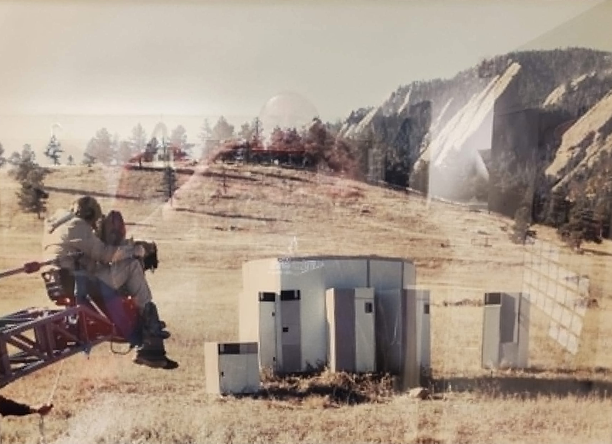

A visual collection of obsolete and rare data storage media formats.
When we think of the mainframe giants, IBM’s massive blue setups usually come to mind. However, in 1969, four rebellious engineers from "Big Blue" – Jesse Aweida, Juan Rodriguez, Thomas Kavanagh, and Zoltan Herger – decided to challenge the titan. They founded Storage Technology Corporation (STC), later known as StorageTek. Their goal was straightforward: build a tape drive for mainframes that was just as good as IBM’s, but more cost-effective and reliable. This led to their breakthrough product, the STC 2450/2470 tape drive, released in 1970. It was a true milestone, but the road to success was filled with corporate folklore, brilliant workarounds, and a very unique corporate culture.
A Live Man Inside the Tape Cabinet
One of the most enduring pieces of early corporate folklore passed down through generations of employees involves the company's very first trade show. As the story goes, the prototype of STC's initial tape drive refused to function just before the big debut. A live demonstration with completely motionless tape reels would have been a marketing disaster. The engineers supposedly came up with a wild workaround: they hid a very small man inside the large cabinet of the tape drive. His sole job during customer demos was to manually spin the reels from the inside, perfectly mimicking the automated functionality of the machine. The trick worked flawlessly, the audience was amazed, and STC secured its crucial first contracts. Whether pure truth or a beautifully crafted corporate legend, this story welcomed new hires for decades, boosting morale even during the tough Chapter 11 bankruptcy days in late 1984. This environment of resilience was exactly what welcomed John, an engineer who joined STC on November 1st, 1982—right when the company was entering its first major financial crisis, a full two years before the eventual Chapter 11 filing in late 1984. John didn't start at the top; he spent his decades-long tenure working his way upwards through the ranks, eventually becoming a Senior Advisory Engineer managing full-stack data center architectures.
Rogue Engineering: The Epic Boulder Field Photoshoot.

In its golden era, the StorageTek campus in Louisville, Colorado, was a bustling hub of high-stakes tech business. The main parking lot regularly served as a landing pad for corporate helicopters shuttling executive staff between corporate sites, while the company jet flew in customer executives for high-profile facility tours. But the engineering and sales teams had a wild, rebellious spirit. They were famous for being "renegades" who just got things done. John shared an incredible behind-the-scenes photograph of the very moment the team went fully rogue. They had decided they needed perfect promotional photos for a new automated library system. They didn't have permission for a fancy location, so they just grabbed a full library, loaded it onto a truck, and drove it out to an open field in Boulder, Colorado. There, on a random grassy hillside with the Flatirons in the background, they set the entire system up and began their improvised photoshoot—much to the dismay of upper management, as they hadn't bothered to get proper permission to use the land first! The aesthetic of those massive StorageTek drives was so captivating that Hollywood quickly took notice. The early 2450/2470 models "starred" as the face of the rogue supercomputer in the classic 1970 sci-fi thriller Colossus: The Forbin Project. Later, in the 1990s, STK's iconic robotic silos became a staple for top-secret government data centers in major action movies, safeguarding critical data in films like Eraser (1996) with Arnold Schwarzenegger, and the blockbuster thriller Clear and Present Danger (1994), where a massive STK tape system operated right behind Harrison Ford in the FBI data center scenes.
The Sacred Ducks of Louisville
Working with such advanced technology required immense creativity, and deployment stories often became legendary. Bob, another veteran engineer, fondly recalls a time when, due to temporary site constraints, a massive StorageTek automated library had to be set up, configured, and rigorously tested entirely outdoors on a parking lot right next to a small pond. The entire operation—including the intricate, precise movements of the robotic picker arm—took place under the watchful eyes and loud quacks of local waterfowl. As John later revealed, those birds weren't just random wildlife; they were the campus royalty. The ducks and Canadian geese belonged to the founder himself, Jesse Aweida, who was of Lebanese descent and viewed ducks as a traditional symbol of success. They had their own dedicated pond on the campus, and the rules regarding them were absolute: if you dared to accidentally hit one with your car on the parking lot, it was an unforgivable corporate sin! From a hidden engineer manually spinning tape reels at a 1970 trade show, to rogue photoshoots in Colorado fields, and finally to robotic calibrations next to the founder’s sacred ducks—StorageTek earned its place in IT history as a brand with incredible soul, character, and a team that always found a way to make the impossible work.